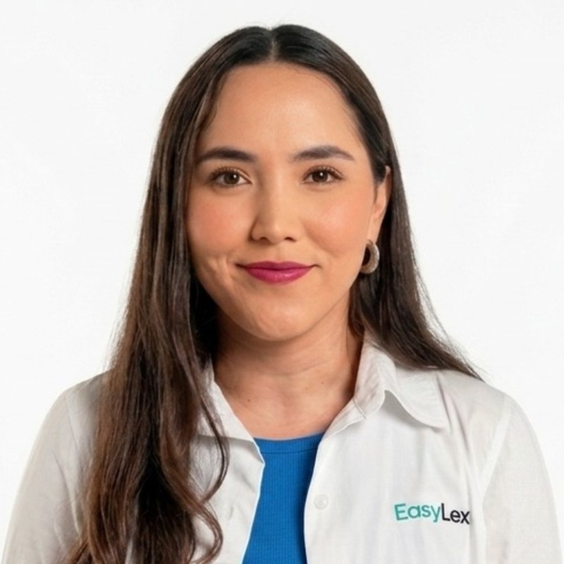

Commercial readiness
Fix the revenue metrics, growth rate, and unit economics that investors benchmark. Build the numbers that make diligence fast and confident.
B2B founders · Raising Series A · LATAM
Before your first VC meeting, weekly work to align your commercial proof, your story, and your timing.
90-minute deep dive. Written recommendation. Credited toward engagement.
Most LATAM founders lose rounds not because the business is weak — but because the commercial proof, the story, and the timing aren't aligned. This program closes that gap.
Fix the revenue metrics, growth rate, and unit economics that investors benchmark. Build the numbers that make diligence fast and confident.
Show a repeatable, scalable sales motion — not just a founder who can close. Investors fund the machine, not the individual.
Build the pitch that answers the questions LATAM VCs actually ask. Market, traction, team, and use of funds — framed to win conviction.
Six to eight weeks in, you walk into the first VC meeting with the right metrics, the right narrative, and the right list — instead of guessing.
We run the audit a Series A investor will run — before they run it on you. The questions are answered before they're asked.
Your unit economics, growth rate, and CAC ratio land where Series A benchmarks demand — not where you wish they did.
The narrative connects your traction to the market in language LATAM VCs already buy. You walk in sounding fundable.
Target list, intro strategy, sequencing — so the round runs tight instead of dragging for nine months.
You keep your top 3 priorities and implement them yourself. If you come back within 30 days, the $1,500 disappears into this engagement.
Secure payment via Stripe. After paying, you pick a slot directly on my calendar.
Who it is for
Who it is not for
Jorge Tellez has originated over $2.5B in transactions, launched a VC arm, and built B2B revenue from zero across multiple companies. He knows what investors look for — because he has been on both sides of the table.

Originated and structured capital transactions at scale — not just a growth advisor.
Regional GM and growth leader with real experience across the LATAM VC and startup ecosystem.
Monthly sessions with weekly accountability, focused on commercial execution and investor readiness.
I have built multi-million-dollar partnerships across companies, governments, and non-profits, and built B2B growth teams end-to-end. BA and Master's with honors from Tec de Monterrey, executive education at Harvard Kennedy School. Mentor founders through Techstars.
"With Jorge, we got our commercial structure in order in four weeks. The foundation we put in place could take us to triple our results and drive measurable execution."

"Jorge ha sido clave en el crecimiento de mi empresa. No solo escucha: se involucra en la estrategia, con experiencia y claridad."
"He has consistently made himself available to provide guidance and support, going above and beyond to help us navigate startup challenges."
"Jorge Téllez delivers an exceptional mentoring skillset, impactful across growth, branding, capital raising, and strategic execution."
"Jorge es más que un mentor: mezcla visión estratégica con un entendimiento práctico para tomar decisiones con foco y velocidad."
Free reaction to your numbers within one business day. No call, no deck.
Not yet
You're not there yet, but these might help while you get there.
Read the blogTwo ways to work together, depending on the bottleneck.
Local market context across key LATAM ecosystems.
Practical breakdowns on GTM, sales, and fundraising.